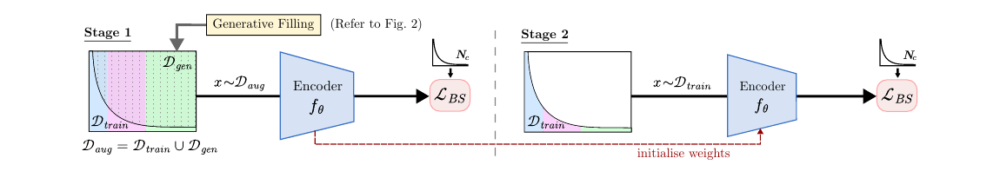
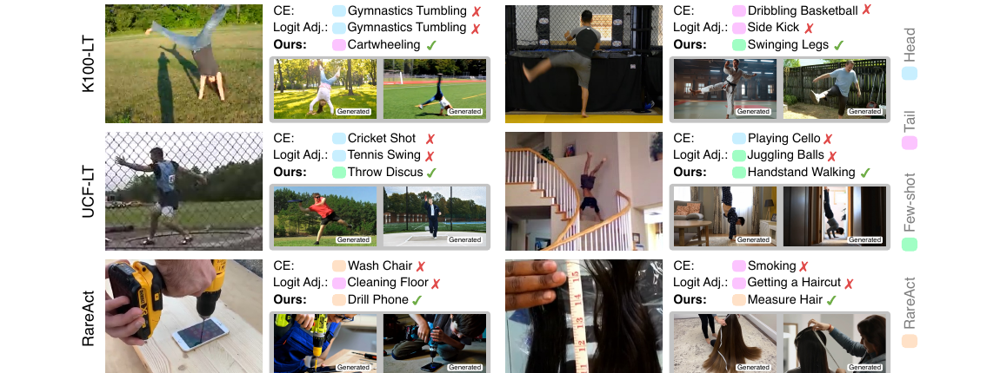
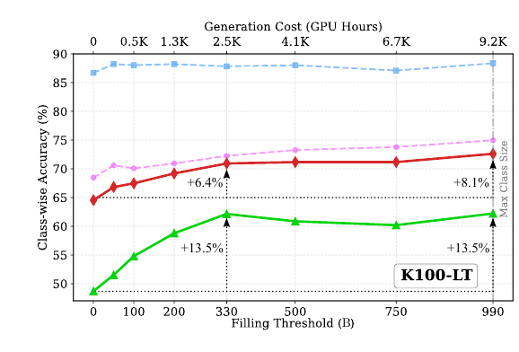

1University of Bristol · 2Adobe Research
ECCV 2026
TL;DR We fill the long tail with class-faithful generated videos for rare actions, then train in two stages — lifting tail, few-shot, and rare-action accuracy by large margins.
We balance long-tailed video datasets with synthetic clips from a pre-trained text-to-video model.
An automatic LLM-driven pipeline (Gemini 2.5 Pro + WAN 2.1) for diverse, class-faithful prompts — and a public release of 140K videos across 223 classes.
Two-stage training (combined → real) with a class-balanced loss using real-data margins works best.
Up to +6.7% (K100-LT) and +5.5% (UCF-LT few-shot) over the strongest baselines, and +31.9% on rare RareAct actions.
For each action class, a multimodal LLM reads a few real exemplars and builds an action profile and a set of diverse, class-faithful prompts. A text-to-video model then turns those prompts into varied generated clips that fill the long tail.
We train in two stages. First, on the balanced set of real + generated clips with a class-balanced loss whose margins come from the real-data frequencies. Then, a short fine-tuning stage on the real long-tailed data corrects the small domain shift between real and generated videos. Evaluation is standard, on the held-out test set.

Class-average accuracy (C/A) against standard and state-of-the-art long-tail baselines, all using the same VideoMAE backbone and fine-tuning protocol. Gen2Balance achieves the best overall accuracy, with the largest gains on tail and few-shot classes while keeping head accuracy competitive.
| Method | Gen. | Few | Tail | Head | Avg C/A |
|---|
Gen. = uses generated data (generative baselines share our pipeline's data for fair comparison). The grayed CE (full dataset) row trains on the full balanced data and is an upper-bound reference. Best non-reference value per column in bold.
Each bar is one of the 100 K100-LT action classes — its height is how much Gen2Balance improves over the baseline. Hover for details, click a bar to inspect a class: its real-vs-generated data mix, accuracy breakdown, and sample clips. Notice the gains grow toward the data-starved tail and few-shot classes.
Bars: green = improvement, red = regression. Shaded bands group head / tail / few-shot classes.

Unlike collecting real data, generation is unbounded — but you don't need to fully balance to get most of the benefit. We vary the filling threshold B (how many clips per class) and track accuracy against the generation cost in GPU-hours.

Partial balancing (B = 330) recovers +6.4% average and +13.5% few-shot accuracy — close to full balancing's +8.1% / +13.5% — at just 27% of the generation compute (2.5K vs 9.2K GPU-hours).
You can capture the bulk of the gains for a fraction of the cost — and this is a one-time offline cost that shrinks as generative models get faster.
@inproceedings{gatti2026gen2balance,
title = {Gen2Balance: Generative Balancing for Long-Tailed Video Action Recognition},
author = {Gatti, Prajwal and Jenni, Simon and Caba Heilbron, Fabian and Damen, Dima},
booktitle = {European Conference on Computer Vision (ECCV)},
year = {2026}
}